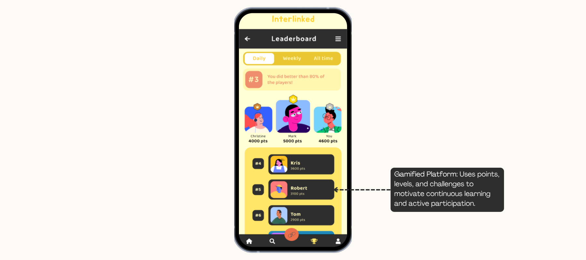
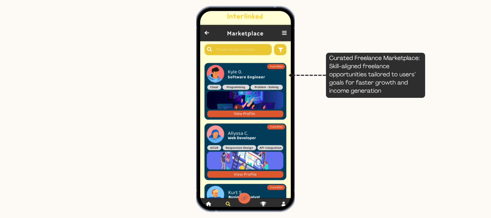
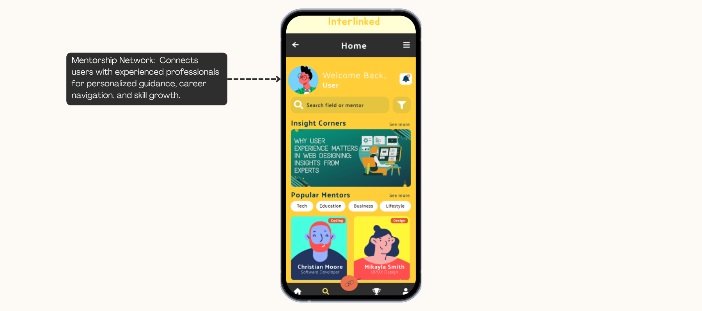

Application Features

Gamified Platform

Micro-Learning Modules

Curated Freelance Marketplace

A Mobile Platform for Learning, Mentorship and Earning
A gamified mobile app for skill development, offering engaging micro-learning modules, a curated freelance marketplace, and a mentorship network to help Filipino youth gain skills, earn opportunities, and connect with industry experts.